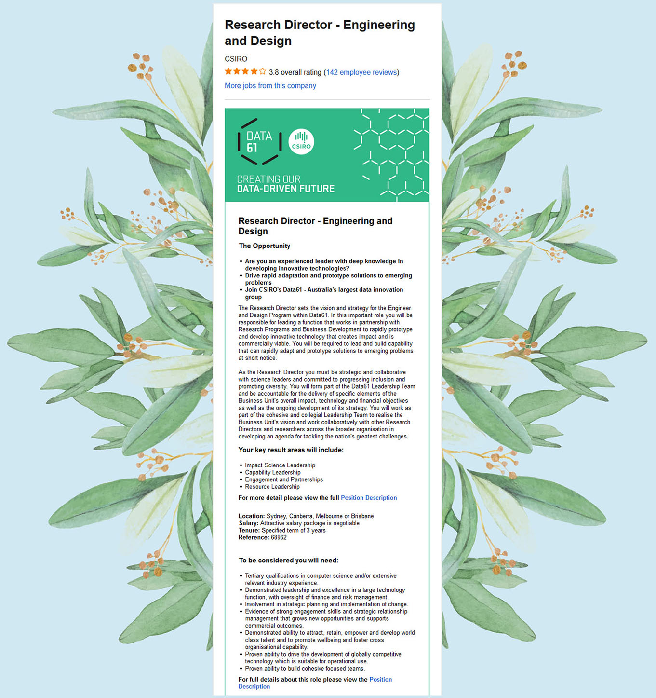
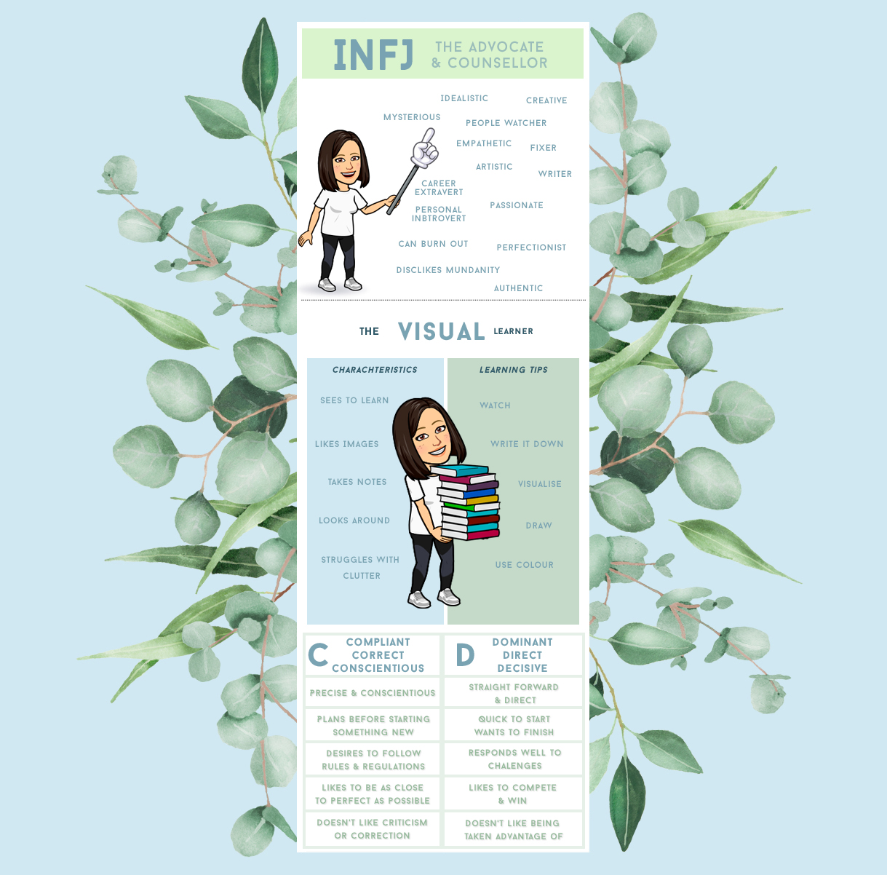
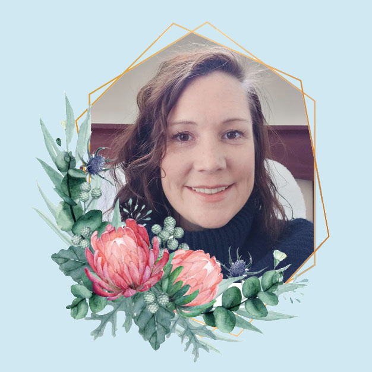
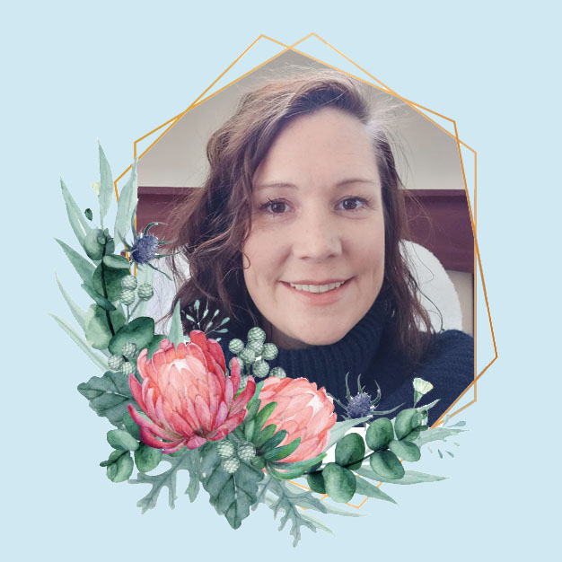

Background information.
Hello! My name is Hannah. I was born and grew up in Australia and currently live on Sydney’s Northern Beaches. I graduated high school in 1999, then, after studying film in college, I moved to New Zealand for five years, where I opened a retail store. After moving back to Australia in 2007, I ran an online wholesale and retail business for twelve years before deciding to pivot my career and am now studying IT at RMIT University. Currently, I am working as a digital designer and eCommerce manager for an online retail business. Recently I won a SUP board in a -fifty words or less- competition and now enjoy spending weekends with my family paddle-boarding on the lake.
Interest in IT.
With the macroeconomic reach of IT, Australia is witnessing a mass-scale digital transformation of the economy and the enterprises set to define it. It is hard not to become engrossed in IT when researching fast-paced developments and
technologies. At the beginning of this year the Coronavirus saw us staying at home, where I began to look deeper into the information technology field and quickly realising that IT is not only ingrained in society but rapidly changing the
way we live and work in all industries, I could not resist the pull to be a part of the movement. When deciding on a career in IT there are many paths. Initially, being drawn to design because of my creative background. I started to look
into user experience and user interaction (UX/UI), fields which excite me. After researching the impact of digital monitoring technologies on the Australian populace, I also became very engrossed with the development and ethics of new
technologies.
My experience in IT as a job role is starting to expand. I use technologies within my work daily, and I am looking forward to learning new skills as my career progresses. The software I have become familiar with in my remote position is the
Office Suite, some of the Adobe design platforms and online communication and sharing tools like Slack, Microsoft Teams, Gmail and Dropbox. Searching has become second nature. Search engines make information abundantly accessible. These
were the tools I used in choosing a course of study. I looked at UX/UI boot-camps and many study paths but felt an IT degree was more valuable for my long term career goals giving a more global knowledge of IT. When choosing a University, I
looked for reviews from recent graduates on Google, Reddit and other review internet pages. RMIT had excellent feedback, and many claimed it to be the best IT degree currently offered in Australia. Therefore in my studies with RMIT, I
expect to gain confidence and learn the skills to function successfully in my chosen IT job role.
Ideal Job.

Following study at RMIT, I will continue studying the relevant qualifications, including management and business, to aim for a career as a design director. This job involves leading a team to develop new technologies and solutions to develop prototype solutions and resolve
relevant problems. I am drawn to the role of design director because the key-skills would suit my interest in design, ethics, policy, technology and relationships. The relevant skills are; relationship management, strategic planning, user
experience, user research and system design. These skills enable the development of relevant user-centred, ethically designed products. Currently, I have relational skills, small business, strategic planning, along with design competence.
This experience I gained through developing my retail business and my current role as a digital designer and eCommerce manager. Above is an advertised, design director job role advertised with a forward-thinking institute. I will begin my
career path by aiming for a UX/UI design positon or a service design position. During my studies, I will incorporate design, management, finance and business subjects and see myself studying continuously throughout my career, utilising
decentralised degrees and micro-courses.
Personal Profile.

The tests I took for this assessment were the Myers-Briggs Type Indicator, found at 16 Personalities.com.. The Disc Personality Test. The How to Study.com Learning
Styles Assessment. and the Interactive Leadership Styles Assessment. In the Myers-Briggs test my personality type showed as INFJ - introverted, intuitive,
feeling, judging and optimistic, sometimes called the advocate or counsellor, this has been consistent since the first time I tested around 15 years ago. The Disc assessment labelled me as a blend of both cautious and dominant, with cautious
just winning out. The learning skills test indicated that I am a visual learner, and the leadership assessment showed me to be a front line leader.
According to the 16 personalities website, Myers Briggs has four main categories of personality types: analysts, diplomats, sentinels and explorers, which break further down into 16 subcategories. Each of these has exciting names, mine
testing as an advocate, which falls under the diplomat category. The Disc assessment has four personality traits, describes as dominance (D), influence (I), steadiness (S), and conscientiousness (C) of which I tested as being conscientious
followed closely by dominance. The traits attributed to my tested personality type have been described as analytical, artistic, careful, conscientious, creative, diplomatic, disciplined, driven, ethical, idealistic, imaginative, intuitive,
organised, responsible, sensitive, strategic, tactful, thoughtful and task-oriented. In addition to these traits the How to Study test has identified me as a visual learner out of the four learning styles: visual, auditory, read/write and
kinaesthetic, indicating that I should utilise visual tools to understand and gain insight in any learning situation. Finally, the leadership quiz designates six styles of leadership: servant, front-line, transformational, metamodern,
postmodern and contrarian. My results showed that I have a front-line leadership style, reiterating the traits of intuitiveness, empathy and indicating interpersonal leadership.
The traits I feel accurately describe me are analytical, intuitive, ethical, creative, responsible and idealistic. The ability to empathise, and intuit people's motivations and feelings will help a team operate with cohesion and make sure
that ideas are supported, and thorough before bringing them up for discussion. Being guided by strong inner values and integrity will help encourage ethical guidance in all aspects of teamwork. A desire to help others reach their potential
will lead to group success. Composed responses to stressful situations are imperative when participating in and leading a team. Within a team, I could come to conflict with other team members whose opinions I believe to be unjust. I prefer
written language and other visual aids to learn. When coopering within a group, I interpret tasks best with note-taking, visual aids such as diagrams and illustrations.
When forming a team these need to be taken into consideration, I work well with others who have strong personal values and ethics which line up with mine, who are passionate and approachable, organised, driven, goal focussed and take logical
steps to reach goals. As I am vulnerable to burnout, have a fear of criticism, and do not thrive in a competitive environment I struggle when collaborating with highly competitive types, insensitive people or those who do not value ethics and
morals. A group including me, with members who are driven, ethical and goal-oriented would return optimal results. I would thrive in a team that utilised many visual aids, videos, colourful note-taking, diagrams and does not work in an
unorganised and untidy environment. With this in mind, it is good to remember that a team is best when diverse as this brings different perspectives and thus generates a more comprehensive and well-rounded result.
As with all these types of tests, perspective is imperative in understanding their reach. Not all of these traits apply to me and, not all of them are things I highly value, some I can mildly identify with and others not at all. These tests
tend to use generalisations, though they may seem applicable to a specific person, many people identify with the descriptions. The results of these tests are open to interpretation and can suit many situations as they are somewhat
generalised.

 
